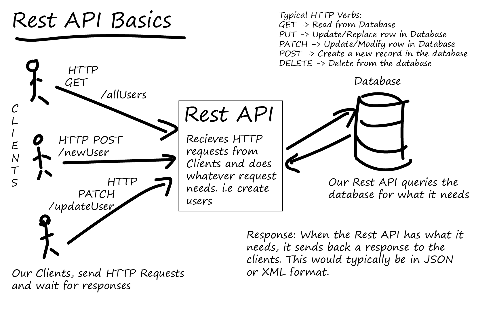

var declarations are function-scoped, meaning they are limited in scope to the function in which
they are declared.
Variables declared with var are hoisted to the top of their function or global scope, which means
they can be accessed before they are declared, but their value will be undefined until the actual
declaration is reached.
let:
let declarations are block-scoped, meaning they are limited in scope to the nearest enclosing block,
such as a loop or an if statement.
Variables declared with let are not hoisted to the top of the block; they are only accessible after
the point at which they are declared.
const:
const declarations are also block-scoped, just like let.
The key difference is that const variables cannot be reassigned after their initial assignment.
However, if the value assigned is an object or array, the properties or elements of the object or
array can still be modified.
Tell us the use cases of null and undefined
Fig. 2: null vs undefined
null:
null is a deliberate assignment value representing the absence of any object value. It's often
used when you want to indicate that a variable or property should have no value or that it's
intentionally empty.
Example: let myVar = null; // Explicitly setting a
variable
to
have
no value.
undefined:
undefined is a primitive value that typically represents the unintentional absence of
a
value. Variables that are declared but not initialized, function parameters that are not
provided,
or non-existent object properties have the value undefined.
Example: let x; // x is undefined because it's declared
but
not
assigned a value.
What do you mean by REST API?

Fig. 3: REST API
Definition: A REST API is an architectural style for designing
networked applications. It is not a
programming language or framework; instead, it's a set of principles and constraints that define how web
services should be structured and how data should be exchanged over the internet.
REST technology is often favored over the more complex Simple Object Access Protocol (SOAP) due to its
efficiency in terms of bandwidth usage and its simplicity and flexibility, making it particularly
suitable for internet-based applications. REST is primarily used to request or provide information from
a web service, and all communication within a REST API is exclusively based on HTTP requests.
Here's how it works: A client sends a request to a server in the
form of a web URL using HTTP
methods
like GET, POST, PUT, or DELETE. Subsequently, the server responds with a resource, which can take
various forms such as HTML, XML, images, or JSON. JSON has become the most prevalent format in modern
web services.
Key Principles: Some key characteristics and concepts of REST
APIs include:
Statelessness: Each request from a client to a server must
contain all the information needed to understand and fulfill the request. The server should not rely
on any previous requests or stored client state.
Resources: Resources are the key abstractions in REST. Each
resource is identified by a unique URI (Uniform Resource Identifier) and can be manipulated using
standard HTTP methods like GET (Read), POST (Create), PUT (Update), and DELETE (Delete).
HTTP Methods: REST APIs use standard HTTP methods for CRUD
operations on resources.
Representation: Resources can have multiple representations
(e.g., JSON or XML), and clients can choose the representation they prefer.
Stateless Communication: REST APIs use stateless
communication, making each request independent.
In the realm of HTTP, there are five commonly used methods in a REST-based architecture: POST, GET, PUT,
PATCH, and DELETE. These methods correspond to create, read, update, and delete (CRUD) operations,
respectively.
GET: The HTTP GET method is employed to retrieve a
representation of a resource. In a successful
scenario, GET returns a representation in XML or JSON and an HTTP response code of 200 (OK). In case
of
an error, it typically returns a 404 (NOT FOUND) or 400 (BAD REQUEST).
POST: The POST verb is primarily used to create new
resources, particularly subordinate resources.
Upon
successful creation, it returns an HTTP status of 201, along with a Location header containing a
link to
the newly-created resource. It's important to note that POST is neither safe nor idempotent.
PUT: PUT is used for updating resources. However, it can
also create a resource when the client
chooses
the resource ID, rather than the server. If a PUT request is made to a URI containing a non-existent
resource ID, it creates that resource. On a successful update, PUT returns a status of 200 (or 204
if no
content is returned in the body). When used for creation, it returns an HTTP status of 201. PUT is
not
considered a safe operation but is idempotent.
PATCH: This method is used to modify resources. A PATCH
request only needs to contain the changes to
the
resource, not the entire resource. It resembles PUT but uses a set of instructions in the body to
describe how the server's resource should be modified to create a new version. PATCH is neither safe
nor
idempotent.
DELETE: DELETE is employed to delete a resource identified
by a URI. Upon successful deletion, it
returns an HTTP status of 200 (OK) along with a response body.